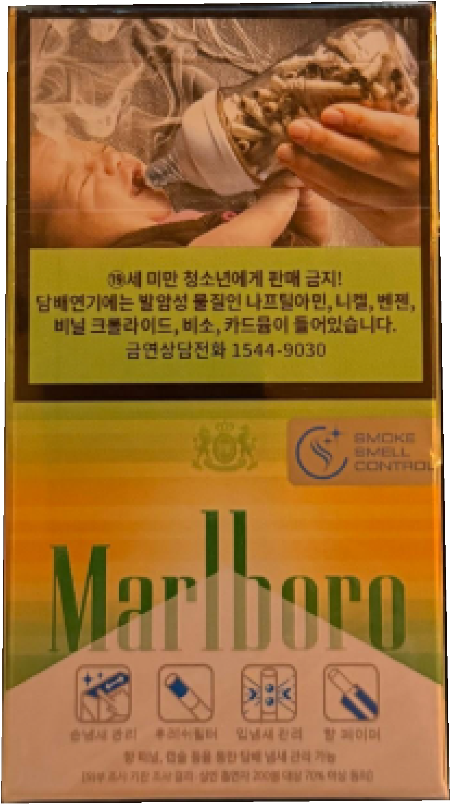

Key Features


Click different parts of the cigarette box to learn about its key features!
Scene and Situation: Convenience Store
Where you’ll find it
In Korea, cigarettes are sold at convenience stores like CU, GS25, and 7-Eleven. You won’t see them on the shelves, though. They’re kept behind the counter, so you have to ask the cashier for a pack and show your ID. You have to be at least 19 to buy one.
Where it ends up
Once someone buys a pack, it usually goes into a pocket, bag, or car. Sometimes it’s left on a table in an outdoor smoking area. Smokers pull the box out throughout the day, which means they see the warning over and over.
Who’s involved
Two groups design every box. Korean health officials handle the warnings, and tobacco companies like Marlboro and KT&G handle the branding. Adult smokers are the main audience, but they aren’t the only ones who see the box. Cashiers and other customers, including minors, can see the packs behind the counter, and the images get the point across even if you can’t read Korean.
The situation
In December 2016, Korea started requiring a full-color picture warning that covers at least half of the pack. Before that, warnings were text only and took up just 20% (Lee et al., 2020). And since everyone has to go up to the counter to pay, customers see the warnings whether they want to or not. Public messages usually depend on people choosing to pay attention, but here that choice is taken away (Screven, 1999). What you end up with is one box sending two opposite messages: the government wants you to quit, and the brand wants you to buy.
Strategies & Decisions When Working Within the Genre
The government’s side
The Korean government picked images meant to scare people. The pictures show some of the worst things smoking can do, like a heart attack that needs open-heart surgery, or a baby being fed from a bottle full of cigarette butts. Lee et al. (2020) found that smokers who felt stronger negative emotions from these images were more motivated to quit, so the shock is on purpose. Companies have to use one of ten pictures the government provides, and the set changes every 24 months.
The government also adds information beneath the picture. Every pack lists the carcinogens in cigarette smoke and gives a hotline number for anyone who wants help quitting. Flavor names aren’t allowed either. The government doesn’t say exactly why, but research suggests flavor cues make cigarettes seem less harmful, especially to younger people (Heo et al., 2026).
The tobacco companies’ side
If you’re designing for a brand like Marlboro or KT&G, you start with only half the front of the box, and you don’t get to choose what goes on the other half. That changes a lot of decisions.
Since they can’t name a flavor, companies hint at it instead. The Marlboro pack I looked at uses green and yellow with the name “garden splash,” which makes it feel fresh without saying what it tastes like. Other brands use words like “Blue” or “Ice.” KT&G’s The One Orange 0.5 goes the other way, with a mostly white box and a soft orange circle that pulls your eye away from the surgery photo. The low tar number and simple layout also make it look cleaner and gentler.
Brands also promote features they’re still allowed to talk about. Marlboro advertises a scent capsule for “Smoke Smell Control” and backs it up with a survey from an outside research firm. Whatever they do with the design, though, they still have to include the warning image, the carcinogen list, the hotline number, and the warning against sales to minors, because the law requires all of it.
Context
Why these decisions were made
Korea's National Tobacco Control Center explains that warning labels help every smoker and don't cost the government anything. That's a big reason the country made them mandatory under the National Health Promotion Act and the Tobacco Business Act. These laws require companies to put a government-provided picture on half the front of every pack, along with a list of carcinogens and a quitline number. The government doesn't explain its ban on flavor names, but research suggests flavor cues make cigarettes seem less harmful, especially to young people (Heo et al., 2026). The tobacco companies are in a tough spot. They still have to sell a product while the law controls a large part of their packaging, so most of their design choices are ways of working around those rules.
Do the warnings actually work?
The research says it depends on how the warning makes someone feel. Lee et al. (2020) surveyed 246 Korean smokers before and after the 2016 picture warnings came out. The new labels didn't get people to quit right away. But smokers who had stronger negative reactions to the images, like fear or disgust, were more motivated to quit than those who didn't. Some smokers also became more aware of the risks after the change. Smokers take out their pack many times a day, so the warning gets a lot of chances to hit them that way. It may not stop someone from buying cigarettes immediately, but it can slowly push them toward quitting.